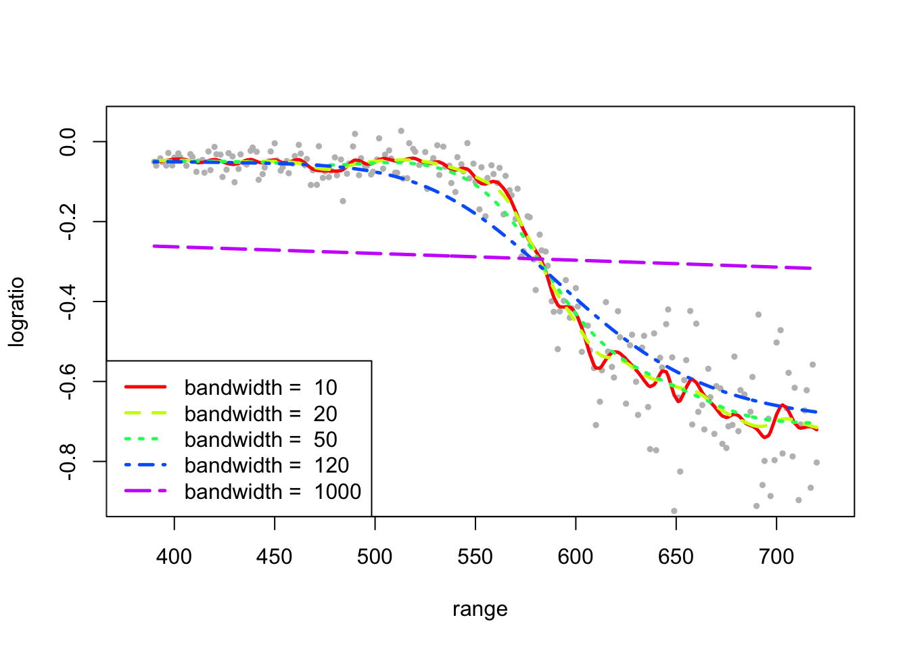
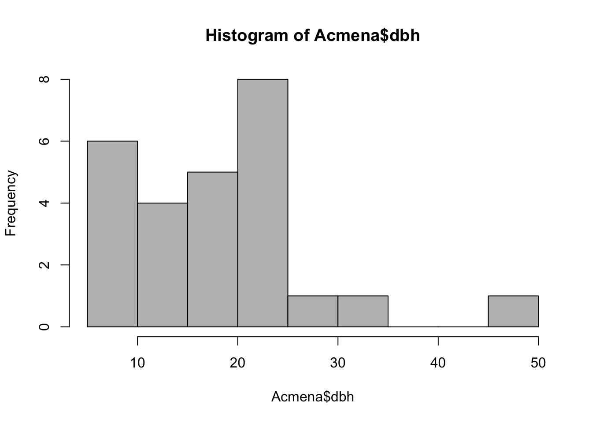
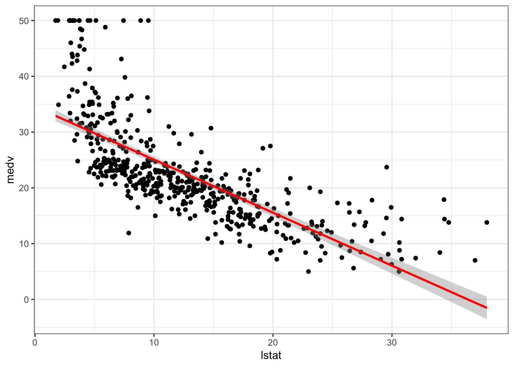
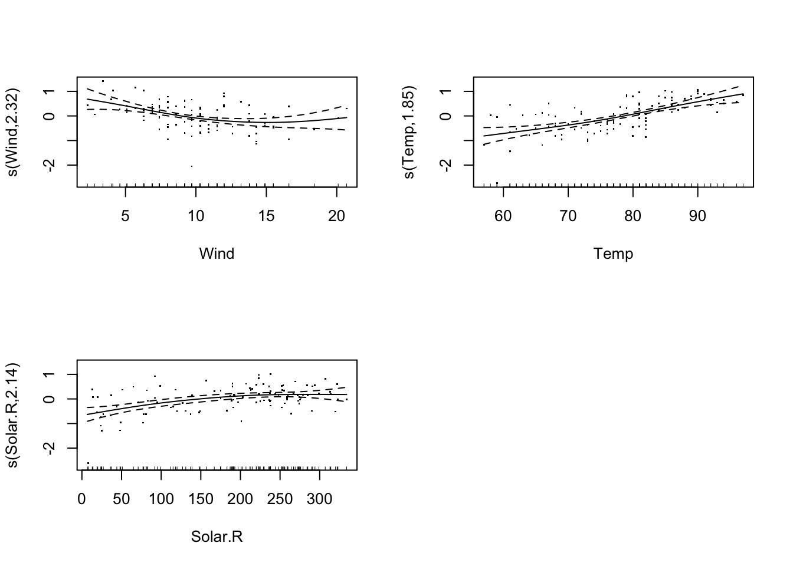

8 Modelos Aditivos Generalizados
8.1 Suavizado
Suavizado Scatterplot
Consiste en resaltar la tendencia subyacente en los datos. La tendencia subyacente sería una función como: \[ f(x) = \mathbb{E}(y|x) \] que también se puede escribir como: \[ y_i = f(x_i) + \epsilon_i,\qquad \mathbb{E}(\epsilon_i)=0, \] en cuyo caso el problema se denomina a menudo como regresión no-paramétrica, donde \(f(\cdot)\) es una función suave no conocida que se estima a partir de los datos \((x_i,y_i)\)
Existen varios métodos para suavizar una gráfica de dispersión, incluyendo splines, regresión kernel, medias móviles, loess o su versión ponderada lowess.
El conjunto de datos lidar consta de 221 observaciones de un experimento de detección y alcance de luz (LIDAR).
library(SemiPar)
#library(car)
data(lidar)
plot(logratio~range,data=lidar)
8.1.1 Regresión polinomial
Consiste en transformar la variable explicativa \(X\), incluyendo polinomios de grado \(p\) tales que: \[ y = \beta_0 + \beta_1 X_1 + \beta_2 X_2 + \beta_p X^p + \epsilon \quad \epsilon\sim\mathcal{N}(0,\sigma^2) \]
library(lattice)
cols. <- rainbow(5)
range.seq <- seq(min(lidar$range),max(lidar$range),l=200)
plot(logratio~range,data=lidar,cex=.5,pch=19,col="grey",xlim=c(380,725),ylim=c(-0.90,0.05))
for(i in 1:5){
lines(range.seq,predict(lm(logratio~poly(range,i),data=lidar),data.frame(range=range.seq)),lwd=2,col=cols.[i])
}
legend("bottomleft",c("p = 1","p = 2","p = 3","p = 4","p = 5"),col=cols.,lty=1:5,lwd=4)
Podemos tratar estas relaciones no lineales de manera efectiva a través de técnicas más flexibles.
Regresión local:
LOESS y LOWESS son dos métodos de regresión no-paramétrica muy relacionados que combinan múltiples modelos de regresión en un modo basado en k-neast-neighbor.
attach(lidar)
span <- 1/c(1,2,3,4,5)
plot(logratio~range,data=lidar,cex=.5,pch=19,col="grey",xlim=c(380,725),ylim=c(-0.90,0.05))
cols <- rainbow(length(span))
for(i in 1:length(span)){
lines(loess.smooth(range,logratio,span=span[i], degree=2),col=cols.[i],lwd=2.5,lty=i)
}
legend("bottomleft",paste("span = ",round(span,3)),col=cols.,lwd=2.5,lty=1:6)
Un suavizado kernel es de la forma: \[ \hat{y}_i = \frac{\sum_{j=1}^n y_i K\left( \frac{x_i-x_j}{b}\right)}{\sum_{j=1}^n K\left( \frac{x_i-x_j}{b}\right)}, \] donde \(b\) es un parámetro de ancho de banda (bandwidth), y \(K\) una función del núcleo/kernel, como en la estimación de densidad. Hay diferentes opciones para el kernel \(K\) (por ejemplo: Gaussian), el parámetro de elección crítico es el ancho de banda b.
En R la función ksmooth en library(stats) permite el suavizado tipo kernel (otras opciones son locpoly en library(KernSmooth))
attach(lidar)
b <- c(10,20,50,120,1000)
plot(logratio~range,data=lidar,cex=.5,pch=19,col="grey",xlim=c(380,725),ylim=c(-0.90,0.05))
cols. <- rainbow(length(b))
for(i in 1:length(b)){
lines(ksmooth(range,logratio,x.points=range,"normal", bandwidth=b[i]),col=cols.[i],lwd=2.5,lty=i)
}
legend("bottomleft",paste("bandwidth = ",b),col=cols.,lwd=2.5,lty=1:5)
8.2 GAMs
Los GAMs (del inglés generalized additive models) son una generalización de los GLMs para incorporar formas no lineales de los predictores (plines, Polinomios, o funciones Step, etc…).
\[ y \sim \mbox{ExpoFam}(\mu,\sigma^2,...)\] \[ \mu = \mathbb{E}[y]\] \[ g(\mu)= \eta = \beta_0 + f(x_1) + f(x_2) + ... + f(x_p)\]
Ahora usamos las funciones suaves \(f(\cdot)\) de nuestras variables predictoras, que pueden tomar formas más flexibles. Se supone que los valores observados son de alguna distribución de la familia exponencial, y \(\mu\) está relacionado con los predictores a través de una función enlace (o link).
En este curso se estudiará la implementación de GAMs en R usando el paquete mgcv y funciones de base tipo spline.
Cargaremos la librería mgcv, y la función gam:
** La función gam
La sintaxis es:
library(mgcv)
fit.gam <- gam(y ~ s(x))En general, la sintaxis es
gam(formula,method="...",select="...",family=gaussian())Los argumentos principales para esta función se deben especificar como una formula:
- La primera opción es la base utilizada para representar los términos suaves
s(x)(ver?so?smooth.terms). El tipo de función base se puede modificar utilizandobsdentro des(x,bs="ps"):
bs |
Descripción |
|---|---|
"tp" |
Thin Plate Regression Splines |
"ts" |
Thin Plate Regression Splines with Shrinkage |
"cr" |
Cubic regression spline |
"crs" |
Cubic regression spline with Shrinkage |
"cc" |
Cyclic cubic regression spline |
"ps" |
P-splines (ver ?p.spline) |
El resto de argumentos es:
mEl orden de la penalización.kla dimensión de la base utilizada para representar el término de suavizado.kdebe ser mayor quem).byuna variable numérica o factorial de la misma dimensión que cada covariable.spcualquier parámetro de suavizado suministrado para el término de suavizado.- etc …
Para más opciones ver ?gam, i.e. method para la selección del parámetro de alisamiento (en general, los métodos basados en la verosimilitud/likelihood tienden a ser más robustos)
method=elegir entre"REML","ML""GCV.Cp","GACV.Cp"
summary(fit.gam)gam.check produce algunos gráficos de residuos básicos, y proporciona alguna información relacionada con el proceso de ajuste.
gam.check(fit.gam)Other residual plots should be examined, e.g.:
plot(fitted(fit.gam),residuals(fit.gam))8.2.1 Ejemplo: Salarios
Salarios y otros datos para un grupo de 3.000 trabajadores varones en la región del Atlántico Medio.
#ISLR package contains the 'Wage' Dataset
require(ISLR)
attach(Wage) #Mid-Atlantic Wage Data
?Wage # To search more on the datasetlibrary(mgcv)## Loading required package: nlme## This is mgcv 1.8-27. For overview type 'help("mgcv-package")'.gam1 <- gam(wage~s(age,k=6)+s(year,k=6)+education,data = Wage)
summary(gam1)##
## Family: gaussian
## Link function: identity
##
## Formula:
## wage ~ s(age, k = 6) + s(year, k = 6) + education
##
## Parametric coefficients:
## Estimate Std. Error t value Pr(>|t|)
## (Intercept) 85.456 2.153 39.692 < 2e-16 ***
## education2. HS Grad 10.978 2.428 4.521 6.4e-06 ***
## education3. Some College 23.530 2.558 9.197 < 2e-16 ***
## education4. College Grad 38.159 2.543 15.005 < 2e-16 ***
## education5. Advanced Degree 62.559 2.760 22.668 < 2e-16 ***
## ---
## Signif. codes: 0 '***' 0.001 '**' 0.01 '*' 0.05 '.' 0.1 ' ' 1
##
## Approximate significance of smooth terms:
## edf Ref.df F p-value
## s(age) 4.435 4.840 46.69 < 2e-16 ***
## s(year) 1.101 1.195 11.11 0.000379 ***
## ---
## Signif. codes: 0 '***' 0.001 '**' 0.01 '*' 0.05 '.' 0.1 ' ' 1
##
## R-sq.(adj) = 0.29 Deviance explained = 29.2%
## GCV = 1240.7 Scale est. = 1236.3 n = 3000par(mfrow=c(1,2)) #to partition the Plotting Window
plot(gam1,se = TRUE) 
Con all.terms = TRUE podemos representar la parte paramétrica:
par(mfrow=c(2,2))
plot(gam1,all.terms=TRUE,scheme=1)
Recordemos que la librería visreg permite visualizar modelos de regresión:
library(visreg)
par(mfrow=c(2,2))
visreg(gam1)8.3 Modelos semi-paramétricos
Los modelos semi-paramétricos permiten combinar componentes lineales (paramétricos) y no paramétricos, por ejemplo:
\[ \boldsymbol{y} = \beta_0 + \beta_1\boldsymbol{x}_1 + ... + \beta_{j-1}\boldsymbol{x}_{j-1} + f(\boldsymbol{x}_j) + \boldsymbol{\epsilon} \]
El procedimiento de ajuste es el mismo que se muestra en las secciones anteriores. Simplemente los efectos paramétricos están incluidos en la parte de efectos fijos, \(\boldsymbol{X}\). Un caso interesado es cuando la parte paramétrica incluye una variable factorial con dos o más niveles. Como vimos en el caso lineal, podemos considerar diferentes situaciones: términos suaves paralelos (efecto aditivo) o términos suaves no paralelos (efecto de interacción). Además, podemos considerar la misma cantidad de alisamiento o una cantidad diferente.
Datos de cebollas
Para ilustrar un caso simple de un modelo semi-paramétrico, consideramos los data(onions) en la library(SemiPar). Los datos consisten en 84 observaciones de un experimento que involucra la producción de cebollas en dos localidades del sur de Australia. Las variables son:
densdensidad de área de las plantas (plantas por metro cuadrado)yieldrendimiento de la cebolla (gramos por planta).locationlocalización:0=Purnong Landing,1=Virginia.
La siguiente figura muestra que para una mayor densidad de plantas el rendimiento de Purnong Landing de onios es mayor.
library(SemiPar)
data(onions)
attach(onions)
points.cols <- c("red","blue")
plot(dens,log(yield),col=points.cols[location+1],pch=16)
legend("topright",c("Purnong Landing","Virginia"),col=points.cols,pch=rep(16,2))
El modelo lineal es:
\[ \log(\text{yield}_i) = \beta_0 + \beta_1\text{location}_{ij} + \beta_2 \text{dens}_i + \epsilon_i \]
donde
\[ \text{location}_{ij} = \left\{ \begin{array}{cl} 0 & \mbox{si la $i$-ésima observación es de Purnong Landing} \\ 1 & \mbox{si la $i$-ésima observación es de Virginia} \end{array} \right. \]
La figura sugiere un término no lineal para dens, por lo tanto, un modelo mejor sería:
\[ \log(\text{yield}_i) = \beta_0 + \beta_1\text{location}_{ij} + f(\text{dens}_i) + \epsilon_i \]
# create a factor for location
L <- factor(location)
levels(L) <- c("Purnong Landing","Virginia")
# fit a gam with location factor
fit1 <- gam(log(yield) ~ L + s(dens,k=20,m=2,bs="ps"),
method="REML", select=TRUE)
summary(fit1)##
## Family: gaussian
## Link function: identity
##
## Formula:
## log(yield) ~ L + s(dens, k = 20, m = 2, bs = "ps")
##
## Parametric coefficients:
## Estimate Std. Error t value Pr(>|t|)
## (Intercept) 4.85011 0.01688 287.39 <2e-16 ***
## LVirginia -0.33284 0.02409 -13.82 <2e-16 ***
## ---
## Signif. codes: 0 '***' 0.001 '**' 0.01 '*' 0.05 '.' 0.1 ' ' 1
##
## Approximate significance of smooth terms:
## edf Ref.df F p-value
## s(dens) 4.568 19 72.76 <2e-16 ***
## ---
## Signif. codes: 0 '***' 0.001 '**' 0.01 '*' 0.05 '.' 0.1 ' ' 1
##
## R-sq.(adj) = 0.946 Deviance explained = 94.9%
## -REML = -54.242 Scale est. = 0.011737 n = 84La siguiente figura muestra las curvas ajustadas para cada ubicación con el modelo fit1, asumimos que ambas curvas son paralelas.
L.P <- rep(levels(L)[1],100)
L.V <- rep(levels(L)[2],100)
dens.g <- seq(min(dens),max(dens),l=100)
fit1.P <- predict(fit1,newdata=data.frame(L=L.P,dens=dens.g),se.fit=TRUE)
fit1.V <- predict(fit1,newdata=data.frame(L=L.V,dens=dens.g),se.fit=TRUE)
plot(dens,log(yield),col=points.cols[location+1],pch=16,cex=.55)
lines(dens.g,fit1.P$fit,col=2,lwd=2)
lines(dens.g,fit1.P$fit+1.96*fit1.P$se.fit,col=2,lwd=2,lty=2)
lines(dens.g,fit1.P$fit-1.96*fit1.P$se.fit,col=2,lwd=2,lty=2)
lines(dens.g,fit1.V$fit,col=4,lwd=2)
lines(dens.g,fit1.V$fit+1.96*fit1.V$se.fit,col=4,lwd=2,lty=2)
lines(dens.g,fit1.V$fit-1.96*fit1.V$se.fit,col=4,lwd=2,lty=2)
Asumir curvas paralelas para ambas localizaciones implica que la disminución del rendimiento a medida que aumenta la densidad es la misma en ambas localizaciones. En lugar de ajustar un modelo de efectos aditivos, podemos ajustar un modelo de efectos con interacción, como por ejemplo:
\[ \log(\text{yield}_i) =\beta_0 + \beta_1 \beta_1\text{location}_{ij} + f(\text{dens}_i)_{L(j)} + \epsilon_i \]
donde
\[ L(j) = \left\{ \begin{array}{cl} 0 & \mbox{si la $i$-ésima observación es de Purnong Landing} \\ 1 & \mbox{si la $i$-ésima observación es de Virginia} \end{array} \right. \]
El opción by= dentro de s() permite incluir interacciones curva factor:
fit2 <- gam(log(yield) ~ L + s(dens,k=20,m=2,bs="ps",by=L),
method="REML", select=TRUE)
summary(fit2)##
## Family: gaussian
## Link function: identity
##
## Formula:
## log(yield) ~ L + s(dens, k = 20, m = 2, bs = "ps", by = L)
##
## Parametric coefficients:
## Estimate Std. Error t value Pr(>|t|)
## (Intercept) 4.84407 0.01603 302.12 <2e-16 ***
## LVirginia -0.33003 0.02271 -14.54 <2e-16 ***
## ---
## Signif. codes: 0 '***' 0.001 '**' 0.01 '*' 0.05 '.' 0.1 ' ' 1
##
## Approximate significance of smooth terms:
## edf Ref.df F p-value
## s(dens):LPurnong Landing 3.097 18 37.62 <2e-16 ***
## s(dens):LVirginia 4.728 17 52.10 <2e-16 ***
## ---
## Signif. codes: 0 '***' 0.001 '**' 0.01 '*' 0.05 '.' 0.1 ' ' 1
##
## R-sq.(adj) = 0.952 Deviance explained = 95.7%
## -REML = -53.616 Scale est. = 0.01045 n = 84Which model is better?
AIC(fit1)## [1] -125.2307AIC(fit2)## [1] -131.1844fit1$sp## s(dens)1 s(dens)2
## 164.66124239 0.00147493fit2$sp## s(dens):LPurnong Landing1 s(dens):LPurnong Landing2
## 4.264039e+02 1.604648e-03
## s(dens):LVirginia1 s(dens):LVirginia2
## 6.437458e+01 1.053443e-03# plot the smooth effects
par(mfrow=c(2,2))
plot(fit2, se=TRUE)
# In the same plot
fit2.P <- predict(fit2,newdata=data.frame(L=L.P,dens=dens.g),se.fit=TRUE)
fit2.V <- predict(fit2,newdata=data.frame(L=L.V,dens=dens.g),se.fit=TRUE)
plot(dens,log(yield),col=points.cols[location+1],pch=16,cex=.55)
lines(dens.g,fit2.P$fit,col=2,lwd=2)
lines(dens.g,fit2.P$fit+1.96*fit1.P$se.fit,col=2,lwd=2,lty=2)
lines(dens.g,fit2.P$fit-1.96*fit1.P$se.fit,col=2,lwd=2,lty=2)
lines(dens.g,fit2.V$fit,col=4,lwd=2)
lines(dens.g,fit2.V$fit+1.96*fit2.V$se.fit,col=4,lwd=2,lty=2)
lines(dens.g,fit2.V$fit-1.96*fit2.V$se.fit,col=4,lwd=2,lty=2)
Figure 8.1: Fitted curves by location
8.3.1 Ejemplo:
Continuémos con el ejemplo Wage
gam2 <- gam(wage ~ jobclass + s(age,k=6)+s(year,k=6)+education,data = Wage)
gam3 <- gam(wage ~ jobclass + s(age,by=jobclass,k=6)+s(year,k=6)+education,data = Wage)
summary(gam2)##
## Family: gaussian
## Link function: identity
##
## Formula:
## wage ~ jobclass + s(age, k = 6) + s(year, k = 6) + education
##
## Parametric coefficients:
## Estimate Std. Error t value Pr(>|t|)
## (Intercept) 84.184 2.186 38.511 < 2e-16 ***
## jobclass2. Information 4.317 1.352 3.193 0.00142 **
## education2. HS Grad 10.751 2.426 4.432 9.67e-06 ***
## education3. Some College 22.741 2.567 8.861 < 2e-16 ***
## education4. College Grad 36.847 2.572 14.325 < 2e-16 ***
## education5. Advanced Degree 60.594 2.824 21.458 < 2e-16 ***
## ---
## Signif. codes: 0 '***' 0.001 '**' 0.01 '*' 0.05 '.' 0.1 ' ' 1
##
## Approximate significance of smooth terms:
## edf Ref.df F p-value
## s(age) 4.408 4.825 45.57 < 2e-16 ***
## s(year) 1.000 1.000 14.29 0.00016 ***
## ---
## Signif. codes: 0 '***' 0.001 '**' 0.01 '*' 0.05 '.' 0.1 ' ' 1
##
## R-sq.(adj) = 0.292 Deviance explained = 29.5%
## GCV = 1237.3 Scale est. = 1232.6 n = 3000summary(gam3)##
## Family: gaussian
## Link function: identity
##
## Formula:
## wage ~ jobclass + s(age, by = jobclass, k = 6) + s(year, k = 6) +
## education
##
## Parametric coefficients:
## Estimate Std. Error t value Pr(>|t|)
## (Intercept) 84.039 2.186 38.453 < 2e-16 ***
## jobclass2. Information 4.284 1.352 3.169 0.00154 **
## education2. HS Grad 10.733 2.425 4.427 9.9e-06 ***
## education3. Some College 22.796 2.564 8.892 < 2e-16 ***
## education4. College Grad 36.940 2.571 14.367 < 2e-16 ***
## education5. Advanced Degree 60.621 2.822 21.482 < 2e-16 ***
## ---
## Signif. codes: 0 '***' 0.001 '**' 0.01 '*' 0.05 '.' 0.1 ' ' 1
##
## Approximate significance of smooth terms:
## edf Ref.df F p-value
## s(age):jobclass1. Industrial 2.980 3.607 33.95 < 2e-16 ***
## s(age):jobclass2. Information 4.551 4.901 20.27 < 2e-16 ***
## s(year) 1.000 1.000 14.27 0.000162 ***
## ---
## Signif. codes: 0 '***' 0.001 '**' 0.01 '*' 0.05 '.' 0.1 ' ' 1
##
## R-sq.(adj) = 0.293 Deviance explained = 29.6%
## GCV = 1237.2 Scale est. = 1231.3 n = 3000par(mfrow=c(2,2))
plot(gam2,all.terms=TRUE,scheme=1)
plot(gam3,all.terms=TRUE,scheme=1)

Ejercicio: Selecciona un modelo GAM.
8.4 Ejemplo: Calidad del Aire
Revisemos los datos ?airquality
data(airquality)
pairs(airquality, panel = panel.smooth)
Una simple gráfica de dispersión muestra que algunas de las variables tienen una relación no lineal.
Consideremos un modelo lineal para la variable de respuesta Ozone
airq.lm <- lm(Ozone ~ Temp + Wind + Solar.R, data=airquality)
summary(airq.lm)##
## Call:
## lm(formula = Ozone ~ Temp + Wind + Solar.R, data = airquality)
##
## Residuals:
## Min 1Q Median 3Q Max
## -40.485 -14.219 -3.551 10.097 95.619
##
## Coefficients:
## Estimate Std. Error t value Pr(>|t|)
## (Intercept) -64.34208 23.05472 -2.791 0.00623 **
## Temp 1.65209 0.25353 6.516 2.42e-09 ***
## Wind -3.33359 0.65441 -5.094 1.52e-06 ***
## Solar.R 0.05982 0.02319 2.580 0.01124 *
## ---
## Signif. codes: 0 '***' 0.001 '**' 0.01 '*' 0.05 '.' 0.1 ' ' 1
##
## Residual standard error: 21.18 on 107 degrees of freedom
## (42 observations deleted due to missingness)
## Multiple R-squared: 0.6059, Adjusted R-squared: 0.5948
## F-statistic: 54.83 on 3 and 107 DF, p-value: < 2.2e-16Veamos los resultados gráficamente:
par(mfrow=c(1,3))
termplot(airq.lm,se=TRUE)
También podemos graficar los residuos del modelo para comprobar las hipótesis del modelo.
par(mfrow=c(1,2))
plot(airq.lm,which=1:2)
La falta de normalidad en los residuos se debe a la asimetría de la variable de respuesta Ozone, podemos aplicar una transformación log para conseguir asimetría, es decir:
par(mfrow=c(1,2))
hist(airquality$Ozone, main="Ozone")
hist(log(airquality$Ozone), main ="log(Ozone)")
Ahora podemos ajustar un modelo lineal del \(\log(Ozono)\), ¿el modelo se ve más adecuado?
lairq.lm <- lm(log(Ozone)~ Temp + Wind + Solar.R, data=airquality)
summary(lairq.lm)##
## Call:
## lm(formula = log(Ozone) ~ Temp + Wind + Solar.R, data = airquality)
##
## Residuals:
## Min 1Q Median 3Q Max
## -2.06193 -0.29970 -0.00231 0.30756 1.23578
##
## Coefficients:
## Estimate Std. Error t value Pr(>|t|)
## (Intercept) -0.2621323 0.5535669 -0.474 0.636798
## Temp 0.0491711 0.0060875 8.077 1.07e-12 ***
## Wind -0.0615625 0.0157130 -3.918 0.000158 ***
## Solar.R 0.0025152 0.0005567 4.518 1.62e-05 ***
## ---
## Signif. codes: 0 '***' 0.001 '**' 0.01 '*' 0.05 '.' 0.1 ' ' 1
##
## Residual standard error: 0.5086 on 107 degrees of freedom
## (42 observations deleted due to missingness)
## Multiple R-squared: 0.6644, Adjusted R-squared: 0.655
## F-statistic: 70.62 on 3 and 107 DF, p-value: < 2.2e-16plot(lairq.lm)Ajustando un modelo lineal podemos concluir que puede haber alguna heterokedasticidad que no se tenga en cuenta en el modelo. Sin embargo, la causa más posible es que la relación entre la variable de respuesta y las covariables está lejos de ser lineal.
Ajustemos un modelo GAM, en primer lugar con una sola variable, es decir:
library(mgcv)
airq.gam1 <- gam(log(Ozone) ~ s(Wind,bs="ps",m=2,k=10),
method="REML", select=TRUE,data=airquality)
summary(airq.gam1)##
## Family: gaussian
## Link function: identity
##
## Formula:
## log(Ozone) ~ s(Wind, bs = "ps", m = 2, k = 10)
##
## Parametric coefficients:
## Estimate Std. Error t value Pr(>|t|)
## (Intercept) 3.4185 0.0655 52.19 <2e-16 ***
## ---
## Signif. codes: 0 '***' 0.001 '**' 0.01 '*' 0.05 '.' 0.1 ' ' 1
##
## Approximate significance of smooth terms:
## edf Ref.df F p-value
## s(Wind) 2.565 9 6.453 2.76e-12 ***
## ---
## Signif. codes: 0 '***' 0.001 '**' 0.01 '*' 0.05 '.' 0.1 ' ' 1
##
## R-sq.(adj) = 0.336 Deviance explained = 35%
## -REML = 128.69 Scale est. = 0.49769 n = 116Los resultados muestran que el efecto suave s(Wind) es significativo (con un valor aproximado de \(p\) cercano a cero y edf \(2.56\)). La siguiente figura muestra el efecto de viento suave. El incremento de la velocidad del viento disminuye los niveles de ozono (dramáticamente hasta 10mph). Tener en cuenta que incluyendo el intercepto, los efectos suaves se centran en cero.
plot(airq.gam1,residuals=TRUE,scheme=1)
gam.check(airq.gam1)
Figure 8.2: Check plots by gam.check
##
## Method: REML Optimizer: outer newton
## full convergence after 8 iterations.
## Gradient range [-1.455961e-06,1.183099e-06]
## (score 128.6926 & scale 0.4976891).
## Hessian positive definite, eigenvalue range [0.4379927,57.51548].
## Model rank = 10 / 10
##
## Basis dimension (k) checking results. Low p-value (k-index<1) may
## indicate that k is too low, especially if edf is close to k'.
##
## k' edf k-index p-value
## s(Wind) 9.00 2.56 0.69 <2e-16 ***
## ---
## Signif. codes: 0 '***' 0.001 '**' 0.01 '*' 0.05 '.' 0.1 ' ' 1Nótese que, en el modelo airq.gam1 usamos k=10 nodos, la variable Wind tiene valores únicos de \(31\), y por lo tanto 10 nodos deberían ser suficientes. Ajustamos un modelo para los residuos del modelo gam ajustado
resids <- residuals(airq.gam1)
resids.gam <- gam(resids~s(Wind,k=20,m=2),method="REML",
select=TRUE,data=airq.gam1$model)
summary(resids.gam)##
## Family: gaussian
## Link function: identity
##
## Formula:
## resids ~ s(Wind, k = 20, m = 2)
##
## Parametric coefficients:
## Estimate Std. Error t value Pr(>|t|)
## (Intercept) 1.137e-15 6.477e-02 0 1
##
## Approximate significance of smooth terms:
## edf Ref.df F p-value
## s(Wind) 7.419e-05 19 0 1
##
## R-sq.(adj) = -5.66e-07 Deviance explained = 7.89e-06%
## -REML = 124.14 Scale est. = 0.48659 n = 116Los resultados muestran que no hay una variabilidad no-explicada entre la variable y los residuos. Por lo tanto, podemos concluir que no necesitamos más nodos. La siguiente figura apoya esta afirmación.
plot(resids.gam)Ahora añadimos la funcion Temp:
airq.gam2 <- gam(log(Ozone)~s(Wind,bs="ps",m=2,k=10)+s(Temp,bs="ps",m=2,k=10),
method="REML",select=TRUE,data=airquality)
summary(airq.gam2)##
## Family: gaussian
## Link function: identity
##
## Formula:
## log(Ozone) ~ s(Wind, bs = "ps", m = 2, k = 10) + s(Temp, bs = "ps",
## m = 2, k = 10)
##
## Parametric coefficients:
## Estimate Std. Error t value Pr(>|t|)
## (Intercept) 3.41852 0.04963 68.89 <2e-16 ***
## ---
## Signif. codes: 0 '***' 0.001 '**' 0.01 '*' 0.05 '.' 0.1 ' ' 1
##
## Approximate significance of smooth terms:
## edf Ref.df F p-value
## s(Wind) 2.068 9 1.353 0.000981 ***
## s(Temp) 3.990 9 10.496 < 2e-16 ***
## ---
## Signif. codes: 0 '***' 0.001 '**' 0.01 '*' 0.05 '.' 0.1 ' ' 1
##
## R-sq.(adj) = 0.619 Deviance explained = 63.9%
## -REML = 101.64 Scale est. = 0.28568 n = 116Por tanto el efecto de Temp es significativo.
par(mfrow=c(1,2))
plot(airq.gam2,residuals=TRUE,scheme=1)Podemos comparar ambos modelos utilizando la función anova:
anova(airq.gam1,airq.gam2)## Analysis of Deviance Table
##
## Model 1: log(Ozone) ~ s(Wind, bs = "ps", m = 2, k = 10)
## Model 2: log(Ozone) ~ s(Wind, bs = "ps", m = 2, k = 10) + s(Temp, bs = "ps",
## m = 2, k = 10)
## Resid. Df Resid. Dev Df Deviance
## 1 111.16 55.958
## 2 105.98 31.123 5.1832 24.835Podemos también comparar el criterio AIC:
AIC(airq.gam1)## [1] 255.0315AIC(airq.gam2)## [1] 195.6561Incluimos la variable Solar.R que contiene valores faltantes (NA’s).
sum(is.na(airquality$Solar.R))## [1] 7Para comparar el modelo anterior airq.gam2 y el nuevo modelo que incluye Solar.R utilizaremos los mismos datos, por lo que omitiremos los valores que faltan y volveremos a ajustar los modelos.
new.airquality <- na.omit(airquality)
airq.gam22=gam(log(Ozone)~s(Wind,bs="ps",m=2,k=10)+s(Temp,bs="ps",m=2,k=10),
method="REML",select=TRUE,data=new.airquality)
airq.gam3=gam(log(Ozone)~s(Wind,bs="ps",m=2,k=10)+s(Temp,bs="ps",m=2,k=10)+s(Solar.R,bs="ps",m=2,k=20),
method="REML",select=TRUE,data=new.airquality)
summary(airq.gam22)##
## Family: gaussian
## Link function: identity
##
## Formula:
## log(Ozone) ~ s(Wind, bs = "ps", m = 2, k = 10) + s(Temp, bs = "ps",
## m = 2, k = 10)
##
## Parametric coefficients:
## Estimate Std. Error t value Pr(>|t|)
## (Intercept) 3.41593 0.05128 66.61 <2e-16 ***
## ---
## Signif. codes: 0 '***' 0.001 '**' 0.01 '*' 0.05 '.' 0.1 ' ' 1
##
## Approximate significance of smooth terms:
## edf Ref.df F p-value
## s(Wind) 2.1879 9 1.919 1e-04 ***
## s(Temp) 0.9874 9 8.601 7.73e-16 ***
## ---
## Signif. codes: 0 '***' 0.001 '**' 0.01 '*' 0.05 '.' 0.1 ' ' 1
##
## R-sq.(adj) = 0.611 Deviance explained = 62.2%
## -REML = 95.215 Scale est. = 0.29194 n = 111summary(airq.gam3)##
## Family: gaussian
## Link function: identity
##
## Formula:
## log(Ozone) ~ s(Wind, bs = "ps", m = 2, k = 10) + s(Temp, bs = "ps",
## m = 2, k = 10) + s(Solar.R, bs = "ps", m = 2, k = 20)
##
## Parametric coefficients:
## Estimate Std. Error t value Pr(>|t|)
## (Intercept) 3.41593 0.04586 74.49 <2e-16 ***
## ---
## Signif. codes: 0 '***' 0.001 '**' 0.01 '*' 0.05 '.' 0.1 ' ' 1
##
## Approximate significance of smooth terms:
## edf Ref.df F p-value
## s(Wind) 2.318 9 2.255 2.44e-05 ***
## s(Temp) 1.852 9 6.128 1.12e-12 ***
## s(Solar.R) 2.145 19 1.397 1.23e-06 ***
## ---
## Signif. codes: 0 '***' 0.001 '**' 0.01 '*' 0.05 '.' 0.1 ' ' 1
##
## R-sq.(adj) = 0.689 Deviance explained = 70.7%
## -REML = 86.106 Scale est. = 0.23342 n = 111AIC(airq.gam22)## [1] 185.7769AIC(airq.gam3)## [1] 166.0423par(mfrow=c(2,2))
plot(airq.gam3,residuals=TRUE)